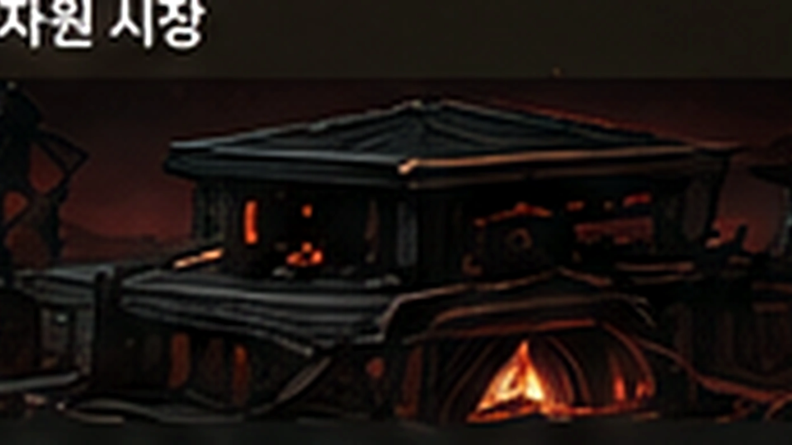
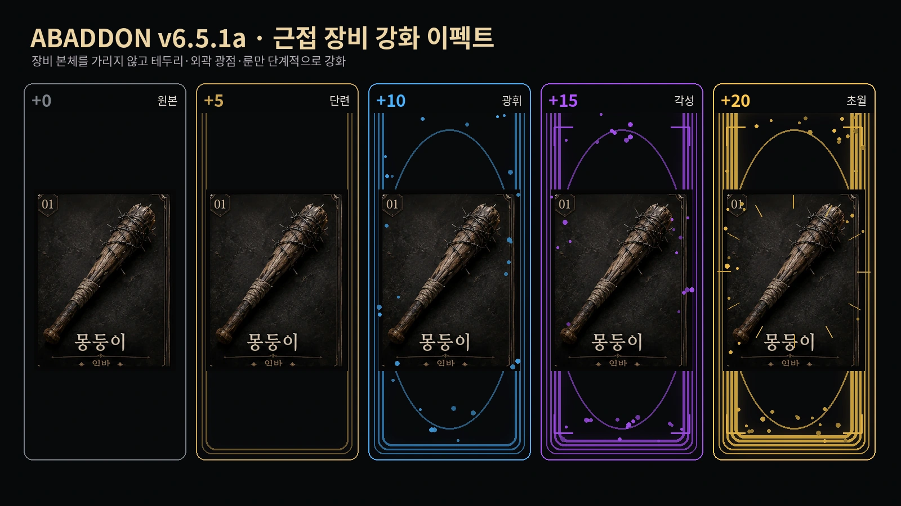
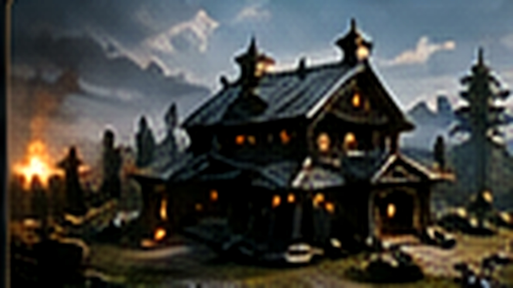
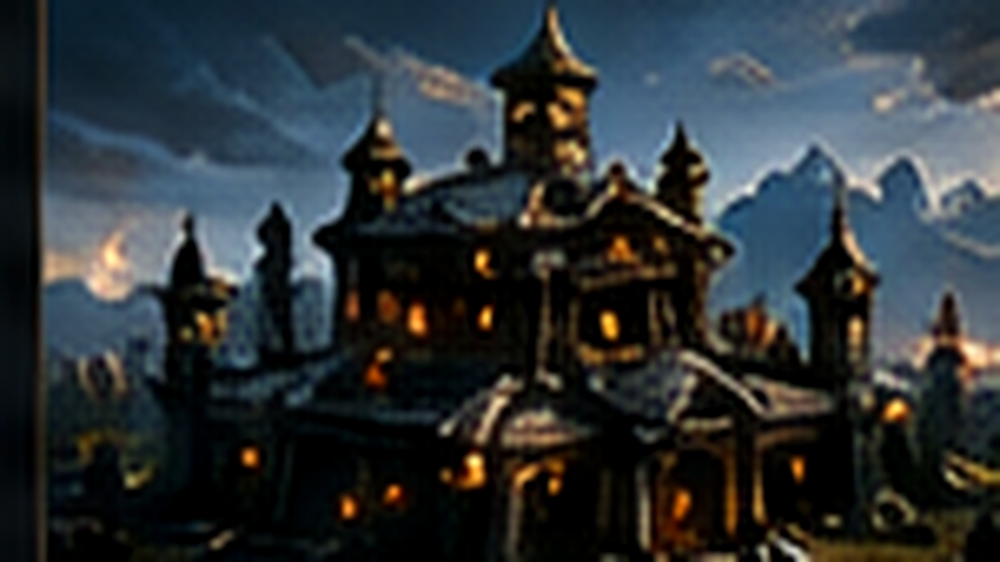

⚔️
장비·강화
실제 장비 카드와 단계별 안전 영역 강화 효과를 사용합니다.
28종 서버 테마를 서버 리뉴얼 드롭다운과 완전히 연결하고 포커·원카드·조커잡기를 참가형 Discord 카드게임으로 추가했습니다. 패치 날짜는 2026-08-02입니다.
28종 테마를 서버 리뉴얼의 채널 구조·게임 구역·브리핑과 동기화했습니다. 포커·원카드·조커잡기는 버튼·드롭다운·비공개 응답을 사용합니다.
실제 배포 에셋을 기준으로 장비·보물·펫·기지·갈갈이 미리보기를 다시 구성하고, 잘린 화면·중첩 스크린샷·흐릿한 기지 이미지를 제거했습니다.
실제 장비 카드와 단계별 안전 영역 강화 효과를 사용합니다.
감정된 보물 원본 카드와 가치·등급 정보를 함께 표시합니다.
19종 동료의 기본·1차·최종 진화 이미지를 유지합니다.
Lv.0~Lv.5를 같은 구도에서 비교할 수 있도록 다시 정렬했습니다.
카지노만 이미지 없이 손익·배팅·승패 중심으로 유지합니다.
아포칼립스·고딕·화사·모던 테마를 서버리뉴얼에서 선택합니다.
!장비외형!보물감정!펫정보!기지!고철갈갈이!서버테마!테스트 상세기존 생존 테마는 그대로 유지하고 깔끔 고딕·화사한 자연·모던 판타지 테마를 추가했습니다. 이미지를 쓰지 않고 색상·이모지·문구만 바꾸므로 가볍고 안전합니다.
!서버테마!서버테마 화사!서버테마미리보기 깔끔고딕!서버테마설정 벚꽃정원!서버리뉴얼에서 테마·채널 구조·게임 구역·알림·이벤트 채널·백업·복구를 통합 관리합니다. 카드게임은 참가 버튼과 비공개 패 확인을 사용합니다.
아포칼립스 12종, 깔끔·고딕 4종, 화사·자연 6종, 모던·판타지 6종을 분류→테마 2단 드롭다운으로 선택합니다.
서버 브리핑, 이벤트 채널, 개인 알림, 백업, 복구, 429 상태와 안전 자동 진행을 하나의 제어실에서 확인합니다.
2~6명이 참가해 비공개 5장을 확인하고 한 장을 한 번 교환한 뒤 족보를 공개합니다.
2~6명 턴제 게임입니다. 같은 무늬·숫자를 내고 2·J·A·조커 특수 효과를 사용합니다.
2~8명이 참가해 같은 숫자 짝을 자동 제거하고 옆 사람 패에서 한 장씩 뽑습니다.
참가비는 시작할 때만 차감합니다. 모집 취소는 미차감, 진행 시간 초과는 전원 환불, 재시작 잔존 예약은 자동 복구합니다.
!서버리뉴얼!서버리뉴얼 테마목록!서버리뉴얼 상태!카드게임!포커!원카드!조커잡기기존 원정·레이드·카지노와 겹치지 않도록 작전 중 획득물만 위험에 노출되는 별도 PvPvE 구조로 설계했습니다.
진입 비용을 내고 파밍한 뒤 3분 동안 탈출 위치가 공개됩니다. 습격당해도 기존 인벤토리와 장착 장비는 안전합니다.
10분 동안 공개 운반을 버티면 계약 화물 가치의 2배를 우편으로 정산합니다. 실패해도 계약 화물만 잃습니다.
서버별 하루 1~2회, 10분 동안 생활 획득량 2배와 희귀 발견 보정을 제공합니다. 이벤트당 한 번 보급선 수색이 가능합니다.

잉여 나무·광석·고철과 비장착 저등급 장비를 칩·강화석·극저확률 상위 장비로 재활용합니다.
시간형 작전 정산과 서버 이벤트 보상을 !우편함에서 확인하고 !받기 all로 한 번에 수령합니다.
날씨·보급선·밀수품 알림을 DM·멘션·둘 다 중에서 선택합니다. 서버 관리자는 공개 이벤트 채널을 지정할 수 있습니다.
새 기능은 특수 작전 / 서버 이벤트 최상위 드롭다운과 상점·서버 관련 카테고리에 중복 없이 정렬됩니다.
!테스트 상세에서 등록 누락·별칭 충돌·가이드 누락·분쇄 안전장치·보급선 스케줄을 읽기 전용으로 검사합니다.
!다크존!다크존진입!다크존탐색!다크존탈출!밀수품운반!보급선!고철갈갈이!우편함!알림설정!테스트 상세기존 슬롯·룰렛·PVP·랜덤박스와 같은 기능을 복제하지 않고, 현금화 타이밍·협동 실패·투표 숙청·옵트인 위험이라는 별도 규칙으로 구성했습니다.
배당이 실시간으로 오르는 동안 탈출 버튼을 눌러야 합니다. 충돌 전에 현금화하지 못하면 판돈을 전부 잃습니다.
움직이는 게이지가 좁은 목표 구간을 지날 때 수신합니다. 오차에 따라 0·2·4·8배로 정산됩니다.
Discord 버튼 제한을 지키는 20칸 지뢰 게임입니다. 안전 칸을 열수록 배당이 오르고 언제든 도망칠 수 있습니다.
3~8명이 참가비를 모으고 라운드마다 탈락자를 투표합니다. 최후의 1명이 수수료를 제외한 상금을 가져갑니다.
3~4명이 공동 참가비를 내고 4개의 보안 관문을 연속 통과합니다. 한 번의 오답으로 전원이 실패합니다.
괴수 투기장과 영혼 결투는 상대 수락 후 진행합니다. 생물 테러도 대상이 옵트인한 경우에만 작동합니다.
하루 1개, 높은 식량 비용, 개인 천장과 서버 주간 한정 전리품을 사용하는 후반용 상자입니다.
!테스트 상세가 신규 명령, 별칭 충돌, 명령어 가이드 누락, 버튼 수와 장비 모듈 시작 오류를 검사합니다.
!괴질탈출!비상주파수!지뢰찾기!돌연변이경주!오염문!비상보급상자!선물거래!벙커개설!금고개설!영혼결투!테스트 상세기존 레이드·원정·암시장·카지노 기능과 역할이 겹치지 않도록 중복을 먼저 확인하고, 짧게 반복할 수 있는 환경·정비·일일 이벤트를 별도로 추가했습니다.
하루를 2~5시간 구간으로 나누고 서버별로 불규칙하게 변경됩니다. 같은 날씨가 연속으로 나오지 않습니다.
주파수 동기화·좌표 역산·긴급 응답 중 하나를 선택합니다. 날씨 구간이 바뀌면 새 신호가 생성됩니다.
전투와 위험 탐색으로 내구도가 감소합니다. 수리 키트와 6종 파츠로 자신만의 무기를 관리합니다.
날씨 구간마다 낮은 확률로 등장하는 칩 전용 상인입니다. 수리품·개조 부품·자원·희귀 장비를 제한 판매합니다.
매일 한 지역이 고위험·고보상 구역으로 지정됩니다. 실패 위험과 피해가 커지는 대신 보상 배율도 크게 상승합니다.
행운의 아이템·음식·방향과 작은 전투·생활·시장 보정을 확인합니다. 첫 확인에는 소액 생존 보상이 지급됩니다.
식량을 지불해 하루 최대 3회 개봉합니다. 장비·파츠·수리 키트·자원·재료·부분 환급이 나옵니다.
!테스트는 명령 등록·날씨 엔진·내구도·카지노 이미지 제거·전투 후크를 재화 변경 없이 점검합니다.
!날씨!무전!위험구역!오늘의 운세!내구도!개조목록!까마귀!랜덤박스!테스트기존 기지 방어·자원 시장·RPG·스토리·던전 전술 전투는 유지하고, 이번 환경·정비 기능이 해당 시스템의 보상과 위험에 보조적으로 연결됩니다.

2~5시간 사이의 불규칙한 환경 구간이 생활 획득량·사고율·던전 전투 효율과 희귀 결과에 소폭 영향을 줍니다.
개인 기지 레벨과 장비 전투력을 합산하는 서버 협동전. 기존 레이드와 보상 구조를 분리했습니다.

나무·광석·고철을 식량으로 사고팔며 수요와 공급에 따라 가격이 변합니다. 카지노 칩 교환도 지원합니다.

일부 동행 펫이 승리 칩을 소폭 늘리거나 손실 일부를 환급합니다. 결과 판정 자체를 뒤집지는 않습니다.

전기·화염·공허·생체·방어·정밀·근접 장비가 서로 다른 강화 효과를 사용합니다.

공격·기술·방어·응급·도주를 선택합니다. 기존 던전은 빠른 자동전투 모드로 유지됩니다.
!기지방어!기지방어공격!자원시장!기지칩교환!전투!던전전술!스토리 전투별도 실시간 피드 Web Service를 15초마다 확인합니다. 운영·보안·문의 내용은 공개하지 않고, 봇 상태와 강화 이정표·운영진 공개 공지만 표시합니다.
별도 Web Service 공개 주소를 연결하면 강화 성공과 공지가 이곳에 자동 표시됩니다.
카지노는 이미지 없이 결과 중심 UI로 정리하고, 기지는 단계별 외형과 고난도 자원 구조를 유지합니다.
슬롯·블랙잭·룰렛·바카라 결과는 이미지 없이 더 깔끔한 임베드로 표시됩니다.
일반 승리·대승·잭팟·패배·치명 실패의 결과 계산과 보상 로직은 그대로 유지됩니다.
연속 플레이 시 이미지 스팸 없이 결과와 잔액 변동을 빠르게 확인할 수 있습니다.

기본 생산 거점. 건설부터 기존보다 많은 생활 자원이 필요합니다.
첫 강화부터 30분의 실제 공사 시간이 적용됩니다.
중반부터 자원 요구량이 크게 뛰어 장기 채집과 투자가 필요합니다.
8시간 공사와 천 단위 생활 자원, 천만 단위 식량을 요구합니다.

최종 24시간 공사와 대규모 자원을 요구하는 최상위 생존 목표입니다.
!카지노!슬롯!블랙잭!룰렛!기지!기지건설!기지강화!기지수확!패치노트!명령어낚시·광산·코인·갈림길 탐색·긴급 지원이 각 결과에 맞는 별도 장면을 사용하며, 단순 상자 한 장을 반복하지 않습니다.

수변 성공·희귀 어종·줄 끊김·약탈자 보트·침수 보급 상자

광맥 발견·희귀 결정·낙석·폐광 가스·지하 기계 동력핵

스캐너 해독·희귀 자산·위조 신호·보급함·매복과 와이어 덫

보급 담당자·암시장 상인·버려진 배급소·사기 거래·특별 지원 물자
!낚시!광산!코인!코인탐색!탐색!돈주세요기존 생존 동료 7종을 유지하고, 아바돈·다크프·루나냥 등 귀여운 신규 펫 12종을 더했습니다. 총 19종 모두 기본·1차·최종 진화 이미지를 사용합니다.

작은 생존 가방을 멘 수집 동료 · 철니 폐허쥐 · 군체의 왕

높은 곳에서 길을 찾는 정찰 동료 · 야간정찰 · 검은 감시자

충직한 군견 동료 · 강화군견 제로 · 전쟁견 제로

그림자처럼 움직이는 고양잇과 동료 · 그림자 살쾡이 · 야수왕

표정 화면이 있는 둥근 보급 드론 · 전투드론 · 오메가 드론

재생 에너지를 품은 아기 동료 · 삼두 하이드라 · 재생의 군주

공간 에너지를 먹고 자라는 귀여운 용 · 공허의 비룡 · 차원룡

별빛 목걸이를 찬 복슬복슬한 강아지 동료. 곁에 있는 것만으로도 생존자의 마음을 안정시킵니다. · 성광 아바돈 · 천상의 아바돈

검은 털과 붉은 장식을 지닌 장난꾸러기 그림자 늑대. 위험을 먼저 감지합니다. · 그림자 다크프 · 심연왕 다크프

초승달 장식을 달고 다니는 새하얀 고양이. 어둠 속 작은 빈틈을 찾아냅니다. · 월광 루나냥 · 달의 여제 루나냥

꼬리 끝에 따뜻한 불꽃을 품은 아기 원숭이. 전투가 길어질수록 용기를 북돋습니다. · 화염 파이어몽 · 태양왕 파이어몽

눈송이처럼 포근한 흰 토끼. 차가운 기운으로 상처와 피로를 가라앉힙니다. · 설원 스노우씨 · 빙설의 수호자

토끼 귀 안테나와 푸른 눈을 가진 소형 로봇. 보급품의 가치를 빠르게 분석합니다. · 강화 메카로보 · 오메가 메카로보

번개 날개를 가진 작고 씩씩한 용. 전장의 흐름을 읽고 강한 일격을 돕습니다. · 뇌광 썬더드래곤 · 폭풍룡

새싹 뿔과 잎사귀 꼬리를 가진 숲의 정령. 재료의 기운과 생명력을 감지합니다. · 숲의 포레스트 · 세계수의 정령

고대 석판과 푸른 핵으로 움직이는 작은 골렘. 단단한 몸으로 앞길을 지켜줍니다. · 강화 미니골렘 · 대지의 거신
무지갯빛 갈기와 별빛 뿔을 지닌 신비로운 동료. 생존자의 행운과 회복을 돕습니다. · 성휘 유니콘 · 별무리 유니콘

작은 날개와 얼음빛 장식을 가진 하늘의 전령. 빠른 움직임으로 위험과 보물을 먼저 찾습니다. · 천공 헤르메스 · 신속의 사자

보랏빛 달 그림자를 두른 검은 고양이. 공허의 기운으로 탐색과 전투 전반을 증폭합니다. · 월영 네온문 · 공허월의 군주
!펫상점!펫정보!펫목록!펫장착!펫훈련!펫먹이!펫모험!펫진화장비 70종과 보물 20종의 이름별 이미지를 유지하면서 무기 종류별 강화 이펙트를 추가했습니다. !장비 드롭다운·검색·상세 카드는 그대로 사용할 수 있습니다.

ITEM_DB의 실제 장비 이름·등급·설명·전투력에 맞춘 개별 카드
+0~+4는 원본 그대로, +5 이후부터 테두리·외곽 광점·속성 모서리 효과·초월 룬이 단계별로 확장

Lv.0 야영지부터 Lv.5 요새까지 같은 구도에서 성장 흐름을 비교

E~A 등급의 실제 감정 보물 이름에 맞는 이미지 표시
!장비!장착!감정!강화!장비외형!제작!보물감정구성원이 남긴 안전한 지식은 운영진 검수를 거쳐 아바돈의 새로운 대화 기록이 됩니다.
말 걸기를 선택하면 모달 대신 현재 채널에 연속 대화가 열립니다. 이후 평소처럼 채팅하거나 아바돈 답변에 답글을 달아 대화를 이어갑니다.
구성원은 모달로 질문과 답변을 제출하고 운영진은 최대 25개씩 승인·반려합니다. 운영진 등록은 즉시 승인되며 개인정보·토큰·초대 링크는 차단합니다.
매일 바뀌는 서버 질문, 생존 밸런스 투표, 응원과 한마디를 제공하며 대화·승인 기억·질문 참여로 사용자별 교감 기록을 쌓습니다.
채널 이름과 주제를 보고 25종 규칙 중 하나를 추천합니다. 여러 채널을 선택하면 채널마다 20초 간격으로 작성·고정하고, 기존 메시지는 중복 없이 갱신합니다.
고철·광석·식량·고대파편·미감정 보물과 굴착 잔돈을 항목별 임베드에 표시합니다. 진행률 연출 뒤 현재 보유량과 남은 횟수까지 한눈에 확인합니다.
돈주세요는 1분·하루 50회이며 정상 지원 뒤 특별 교섭 버튼이 랜덤 등장합니다. 성공 시 기본 지원과 별도로 5,000~20,000 식량을 받습니다. 낚시·광산은 각각 독립 2분입니다.
검은 주파수와 백색 방주의 선택을 계승하는 시즌 3 캠페인과 4개의 신규 엔딩을 드롭다운으로 진행합니다.
Discord 연결, 데이터 파일, TTS, 서버 리뉴얼, 슬래시 명령, 홈페이지 피드와 봇 권한을 드롭다운으로 점검합니다.
TTS 채널·엔진·기본 목소리, 환영 안내, 운영 로그, 자동 이모지와 공개 피드를 명령 하나에서 관리합니다.
일반 사용자가 자신의 음성을 드롭다운으로 선택하며 다른 사람이나 서버 기본값은 변경하지 않습니다.
음성방에 들어간 상태에서 음성을 시험하고, 개인 설정을 초기화해 서버 기본값으로 돌아갈 수 있습니다.
환영 메시지에 공지사항·서버 기본규칙·가입 채널을 연결하고 `!가입 생존자` 시작법을 안내합니다.
TTS 채팅방의 메시지를 작성자의 음성방에서 읽되, 닉네임은 생략하고 채팅 내용만 낭독합니다. discord.py 2.7용 음성 런타임도 유지합니다.
명령 하나로 테마 미리보기·안전 계획·수동 백업·복구·빈 카테고리 정리를 선택합니다.
봇 상태와 공개 강화·공지 이벤트가 별도 피드 서비스에서 홈페이지로 안전하게 흐릅니다.
음성 성역과 정돈된 서버 메뉴를 공식 Discord에서 직접 확인하세요.
지뢰찾기는 총액과 순손익을 분리하고, 선물거래는 실시간 이모지 차트로 움직입니다. 서버 레이스는 참가 버튼을 누른 사람만 출전합니다.
현재 보유 칩·현금화 총액·얻은 돈·잃은 돈을 결과 화면에서 바로 구분합니다.
롱·숏 진입 후 16틱 차트와 미실현 손익을 보며 수동 또는 자동 청산합니다.
버튼 반응속도와 잠깐 표시되는 이모지 배열을 이용한 접근성 높은 개인 게임입니다.
참가 버튼으로 인원을 모집하고 방장이 확정한 뒤, 이모지 효과가 흐르는 서버 레이스를 시작합니다.
!미니게임!지뢰찾기!선물거래!반응속도!기억회로!생존자레이스!테스트 상세